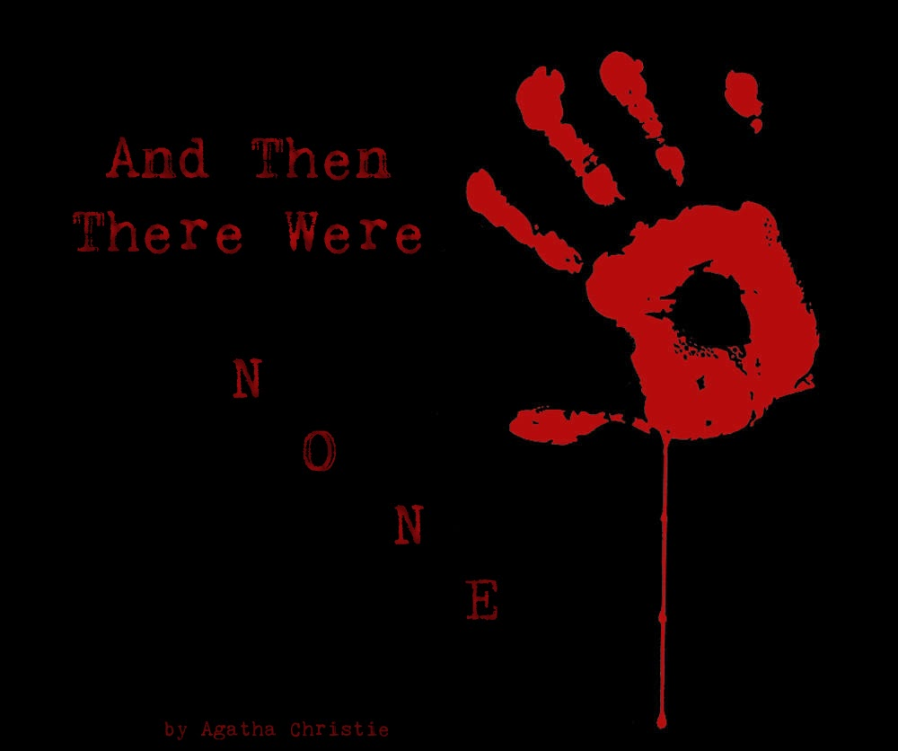

Agatha Christie published the world's best-selling mystery novel in 1939. And Then There Were None tells the story of ten people who were lured onto Indian Island by a man named U. N. Owen. Once all ten people were in the house on the island, the story picks up when Anthony Marston is poisoned
